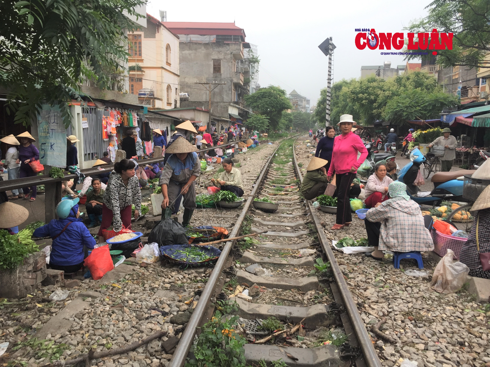

Sau 2 tháng làm việc ròng rã (2 ngày), cuối cùng A7 News đã được ra mắt. A7 News được ra mắt là thành quả của mồ hôi và xương máu của đồng chí NĐTL: "Năm nay tôi 13 tuổi rồi mà chưa bao giờ gặp trường hợp như thế này; sau 2 tháng làm việc (2 ngày làm việc) thì cuối cùng A7 News - Con đẻ của tôi cũng được ra mắt. Bây giờ tôi đang cảm thấy rất là chất nhưng mà là chất độc màu da cam." - Anh nói.
Đồng chí NĐTL vốn đã sinh ra trong hoàn cảnh bình thường, có phụ huynh bình thường; Nhưng không vì hoàn cảnh mà làm chùn bước anh, anh đã cố gắng ngày đêm, làm những điều có ích cho đất nước đến nỗi thường hay quên ăn chỉ để phục vụ cho đất nước. Hiện anh đang làm việc và sinh sống tại Ngõ 401 Đường Cổ Nhuế, Phường Cổ Nhuế 2, Quận Bắc Từ Liêm, Hà Nội.
Nguồn: Công Luận TV